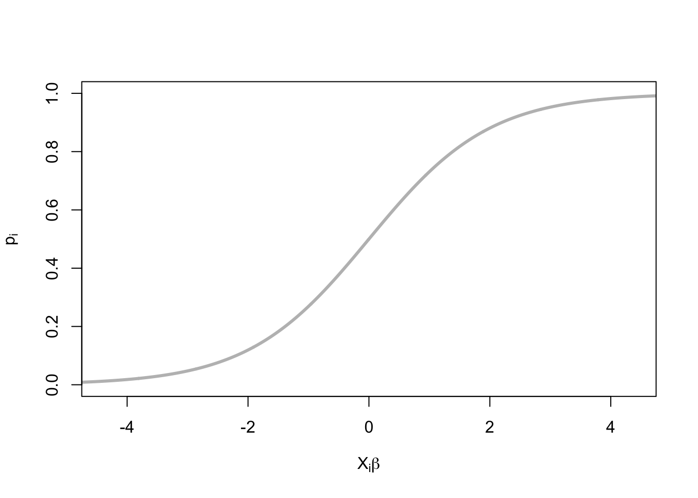
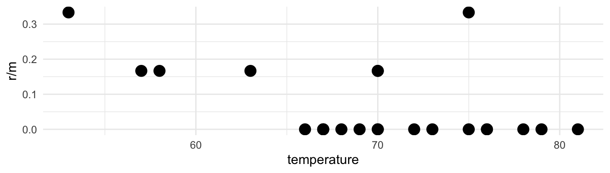
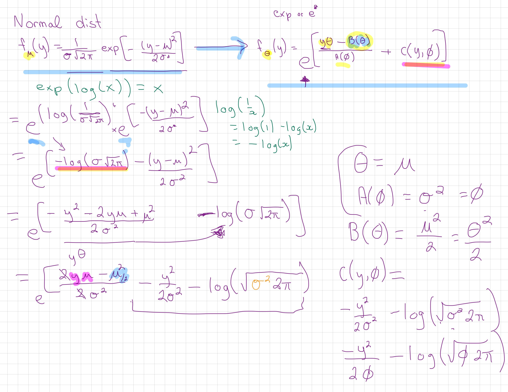
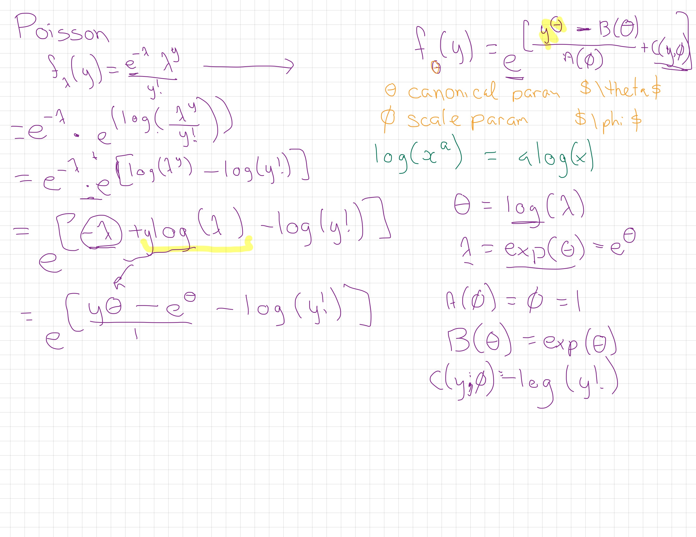
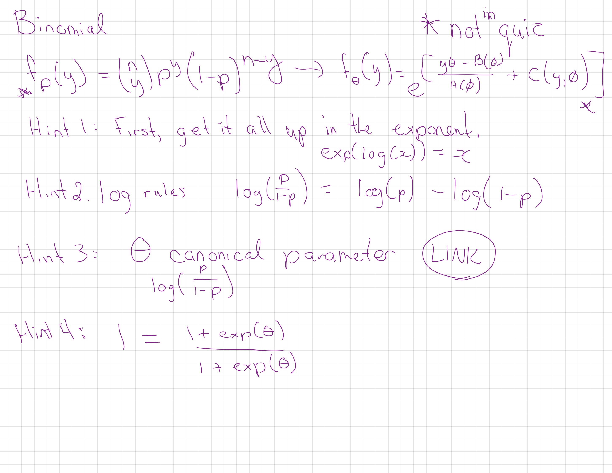
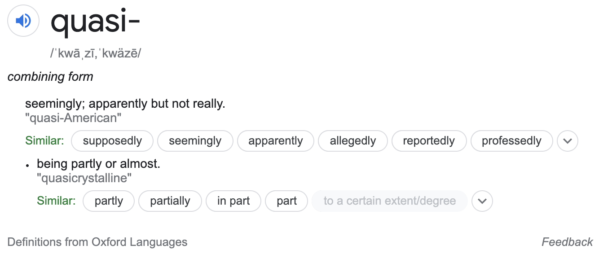

17 Module 4
Materials for February 28–March 11, 2022.
17.1 Learning checklist
Distributions
Recognize a form of the probability density function for Bernoulli, binomial, Poisson, exponential, and gamma.
Identify how changing values for a parameter affects the characteristics of the probability distribution.
Identify the mean and variance for each distribution.
Match the response for a study to a plausible random variable and provide reasons for ruling out other random variables.
Match a histogram of sample data to plausible distributions.
Odds, risks and logistic regression
Create tables and calculate joint, marginal and conditional probabilities with them.
Calculate odds, risks, odds ratios (OR), and risk ratios (RR).
Understand why ORs and RRs are similar for rare outcomes.
Interpret logistic regression output.
Differentiate between logistic regression models with binary and binomial responses.
Use the residual deviance to compare models, and to test for lack-of-fit when appropriate.
GLM properties and unifying theory
State the assumptions of GLMs.
Identify appropriate modeling approaches to start with from a description of a study/data.
Determine if a probability distribution can be expressed in one-parameter exponential family form.
Identify canonical links for distributions of one-parameter exponential family form.
Poisson regression
Conduct Poisson regression and interpret the coefficients.
Use and describes offsets, as appropriate.
Check for overdispersion.
Consider negative binomial, quasi-likelihoods, and zero-inflated extensions to Poisson regression.
17.2 Introduction
In this module, we will draw on knowledge of common distributions from your previous statistics courses, and then moving into logistics regression, and then broadening our horizons further with the family of models that come under the title of generalized linear models.
This big picture: A key assumption of linear regression you’ve worked through so far is that is that the residuals should be normal. With our current tools, we can’t well account for binary data, probabilities (bounded [0, 1]), skewed distributions or even counts and in many cases.
17.3 Distributions (recap)
Much of this section should be recap of things you’ve learned in second-year statistics courses.
Reading: Chapter 3 (§ 3.3.1, 3.3.2, 3.3.4, 3.3.6, 3.4.2, 3.5) of Roback, P. & Legler, J. Beyond Multiple Linear Regression. (2021). https://bookdown.org/roback/bookdown-BeyondMLR/.
17.3.1 Sections to preview and skim
- 3.3.1 Binary Random Variable
- 3.3.2 Binomial Random Variable
- 3.3.6 Poisson Random Variable
- 3.4.1 Exponential Random Variable
- 3.4.2 Gamma Random Variable
17.3.1.1 Recommended revision
- 3.5 Distributions Used in Testing
- Honestly, all of Chapter 3 is a great resource for revising these distributions.
17.3.2 Reading guide
Try to answer the following for the selected distributions:
- What is the probability distribution function?
- What is/are the parameter(s)?
- How do changes to the the parameter(s) effect the response?
- What are the mean and variance?
- What values can your response variable take?
- When might you use this distribution? Come up with an example.
- What R code can you use to explore the density of this distribution?
- Can you simulate the distribution? Play with the parameters for yourself.
17.3.3 Cheat sheet template
I’ve made a template for a ‘cheat sheet’ on which you can take these
notes/play with code. You can pull it on the JupyterHub with this
link.
From your Home directory, you will need to navigate to
sta303-w22-activities -> m4. There are several Rmd you can play with
in this file. The one for this activity is: 1A dist-cheat-sheet.Rmd.
17.4 Ontario COVID hospitalizations
Suppose you’re interested in hospitalizations by age group in Ontario due to COVID. This table also shows the estimated population in each age group.
This data is old, it was retrieved from https://www.publichealthontario.ca/en/data-and-analysis/infectious-disease/covid-19-data-surveillance/covid-19-data-tool?tab=ageSex on 2021-02-28.
| Age | Hospitalizations | Population |
|---|---|---|
| 0 to 09 | 98 | 1518527 |
| 10 to 19 | 92 | 1617937 |
| 20 to 29 | 402 | 2100175 |
| 30 to 39 | 668 | 2056056 |
| 40 to 49 | 1010 | 1876585 |
| 50 to 59 | 1932 | 2060937 |
| 60 to 69 | 2714 | 1795047 |
| 70 to 79 | 3151 | 1159898 |
| 80 to 89 | 3354 | 539715 |
| 90+ | 1645 | 139551 |
17.4.1 Creating tables in R
Suppose our raw data has an observation per row.
# Read teh data in
ontario <- readRDS("data/m4/ontario_full.RDS")
head(ontario)Rows: 14,864,428
Columns: 2
$ Age <fct> 0 to 09, 0 to 09, 0 to 09, 0 to 09, 0 to 09, 0 to 09, 0 to 09, 0 …
$ Status <chr> "Hospitalized", "Hospitalized", "Hospitalized", "Hospitalized", "…17.4.2 Creating tables
You can create a table with the table() function in R. (The xtabs
function is also useful for creating cross (x) tables.)
hosp_table <- table(ontario$Age, ontario$Status)
hosp_table17.4.3 Calculations with tables
From this kind of table there are three types of proportions that we can calculate.
Joint
- Joint proportions reflect the proportion total observation for which given levels of your categorical variables co-occur. I.e., what proportion of people were over 90 and hospitalized?
- General calculation: Cell value over the grand total.
Marginal
- Marginal proportions sum across rows or columns. I.e., what is the proportion the Ontario population that has been hospitalized? We’d need to add up all the hospitalized and then divide that by the sum of all the cells.
- General calculation: Row or columns sums over the grand total
Conditional
- Conditional proportions hold one variable level as given, it is a bit like zooming in to only one row or one column.
- General calculation: Cell value over a row or column sum.
The margin.table() and prop.table() functions will be very helpful
to us!
17.4.4 Joint probabilities
Calculate joint proportions:
hosp_table/sum(hosp_table)##
## Hospitalized Not hospitalized
## 0 to 09 6.592921e-06 1.021519e-01
## 10 to 19 6.189273e-06 1.088400e-01
## 20 to 29 2.704443e-05 1.412616e-01
## 30 to 39 4.493950e-05 1.382756e-01
## 40 to 49 6.794745e-05 1.261788e-01
## 50 to 59 1.299747e-04 1.385190e-01
## 60 to 69 1.825835e-04 1.205787e-01
## 70 to 79 2.119826e-04 7.781981e-02
## 80 to 89 2.256394e-04 3.608353e-02
## 90+ 1.106669e-04 9.277585e-03\[\frac{n_{ij}}{\Sigma n_{ij}}\]
17.4.5 Marginal probabilities
Proportion of people in each age group:
round(margin.table(hosp_table, margin = 1)/sum(margin.table(hosp_table, margin = 1)), 3)##
## 0 to 09 10 to 19 20 to 29 30 to 39 40 to 49 50 to 59 60 to 69 70 to 79
## 0.102 0.109 0.141 0.138 0.126 0.139 0.121 0.078
## 80 to 89 90+
## 0.036 0.009Proportion of people in each hospitalization status group:
round(margin.table(hosp_table, margin = 2)/sum(margin.table(hosp_table, margin = 2)), 3)##
## Hospitalized Not hospitalized
## 0.001 0.99917.4.6 Conditional probabilities
Conditional on each row:
knitr::kable(prop.table(hosp_table, margin = 1))| Hospitalized | Not hospitalized | |
|---|---|---|
| 0 to 09 | 0.0000645 | 0.9999355 |
| 10 to 19 | 0.0000569 | 0.9999431 |
| 20 to 29 | 0.0001914 | 0.9998086 |
| 30 to 39 | 0.0003249 | 0.9996751 |
| 40 to 49 | 0.0005382 | 0.9994618 |
| 50 to 59 | 0.0009374 | 0.9990626 |
| 60 to 69 | 0.0015119 | 0.9984881 |
| 70 to 79 | 0.0027166 | 0.9972834 |
| 80 to 89 | 0.0062144 | 0.9937856 |
| 90+ | 0.0117878 | 0.9882122 |
Conditional on each column:
knitr::kable(round(prop.table(hosp_table, margin = 2), 3))| Hospitalized | Not hospitalized | |
|---|---|---|
| 0 to 09 | 0.007 | 0.102 |
| 10 to 19 | 0.006 | 0.109 |
| 20 to 29 | 0.027 | 0.141 |
| 30 to 39 | 0.044 | 0.138 |
| 40 to 49 | 0.067 | 0.126 |
| 50 to 59 | 0.128 | 0.139 |
| 60 to 69 | 0.180 | 0.121 |
| 70 to 79 | 0.209 | 0.078 |
| 80 to 89 | 0.223 | 0.036 |
| 90+ | 0.109 | 0.009 |
17.4.7 Risk and odds
- “Risk” refers to the probability of the occurrence of an event or outcome. Statistically, risk = chance of the outcome of interest/all possible outcomes. The term “odds” is often used instead of risk. “Odds” refers to the probability of occurrence of an event/probability of the event not occurring. At first glance, though these two concepts seem similar and interchangeable, there are important differences that dictate where the use of either of these is appropriate.
From Common pitfalls in statistical analysis: Odds versus risk
17.4.8 Hospitalization risk and odds
Let’s focus on folks aged 80 to 89.
Hospitalized Not hospitalized
80 to 89 3354 536361This risk of being hospitalized for this group is \(\frac{3354}{3354+536361} = 0.0062\).
The odds of being hospitalized are \(\frac{3354}{536361} = 0.0063\).
These values look fairly similar. Odds and risks will be similar when the outcome of interest is rare. This can be seen by the fact that the only difference between the two calculations is whether the count of the outcome is included in the denominator or not. As a rule of thumb, an outcome is ‘rare’ if it occurs less than 10% of the time.
17.4.9 Odds ratio and risk ratios
Risk ratios are also called ‘relative’ risks. Risk ratios and odds ratios are…ratios of risks and odds respectively.
They are used to make comparisons between groups. Let’s for example, compare 80 to 89 year olds with 10 to 19 year olds.
Hospitalized Not hospitalized
10 to 19 92 1617845
80 to 89 3354 536361\[OR = \frac{3354/536361}{92/1617845} = 110\] \[RR = \frac{3354/(3354+536361)}{92/(92+1617845)} = 109\] Once again, these values are similar because being hospitalized is (thankfully!) rare.
17.4.10 When do we use RR vs OR?
Calculation of risk requires as to know how many people are ‘at risk.’ As we’ll see next week, in case-control studies, where such totals are not available to us, we cannot calculate a relative risk. BUT, we can calculate odds ratios and make a comment on the strength of association between our exposure and the outcome.
In cohort studies, where we do have the number number exposed, we can calculate either/both.
Logistic regression, which we’ll be seeing more of in the next few weeks, calculates adjusted ORs and not RRs and so being able to interpret them is going to be important to us.
17.5 Generalized linear models (GLMs)
Generalized linear models are a flexible class of models that let us generalize from the linear model to include more types of response variables, such as count, binary, and proportion data.

Image description: A feminine person in active wear holding a yoga pose where they are standing on their right foot, leaning forward and extending their right arm and holding the left leg out behind their back with their left arm.
Let’s get flexible, flexible…
17.5.1 Assumptions of the Generalized Linear Model
The data \(Y_1, Y_2, ..., Y_n\) are independently distributed, i.e., cases are independent.
- Thus errors are independent… but NOT necessarily normally distributed.
The dependent variable \(Y_i\) does NOT need to be normally distributed, but it assumes a distribution, typically from an exponential family (e.g. binomial, Poisson, gamma,…)
GLM does NOT assume a linear relationship between the dependent variable and the independent variables, but it does assume a linear relationship between the transformed response (in terms of the link function) and the explanatory variables; e.g., for binary logistic regression \(logit(p) = \beta_0 + \beta_1X\).
The homogeneity of variance does NOT need to be satisfied.
It uses maximum likelihood estimation (MLE) rather than ordinary least squares (OLS) to estimate the parameters, and thus relies on large-sample approximations.
17.5.2 Components of a Generalized Linear Model
Generalized linear models have three parts:
- random component: the response and an associated probability
distribution
- systematic component: explanatory variables and relationships among them (e.g., interaction terms)
- link function, which tell us about the relationship between the systematic component (or linear predictor) and the mean of the response
It is the link function that allows us to generalize the linear models for count, binomial and percent data. It ensures the linearity and constrains the predictions to be within a range of possible values.
17.5.3 Generalized Linear Models
\(Y_i \sim G(\mu_i, \theta)\)
\(h(\mu_i) = X_i^T\beta\)
- \(G\) is the distribution of the response variable
- \(\mu_i\) is a location parameter for observation \(i\)
- \(\theta\) are additional parameters for the density of \(G\)
- \(h\) is a link function
- \(X_i\) are covariates for observation \(i\)
- \(\beta\) is a vector of regression coefficients
17.5.4 Ordinary Least Squares again
17.5.4.1 GLM
\[\begin{align*} Y_i \sim & G (\mu_i, \theta)\\\\ h(\mu_i) = & X_i^T \beta \end{align*}\]
17.5.4.2 OLS
\[\begin{align*} Y_i \sim & N( \mu_i, \sigma^2)\\ \mu_i = & X^T_i \beta \end{align*}\]OLS is just a flavour of GLM when:
- \(G\) is a Normal distribution
- \(\theta\) is the variance parameter, denoted \(\sigma^2\) - \(h\) is the
identity function
17.6 Binomial (or logistic) regression
\[\begin{align*} Y_i \sim & \text{Binomial}(N_i, p_i)\\ \log\left(\frac{p_i}{1-p_i}\right) = & X_i \beta \end{align*}\]- \(G\) is a Binomial distribution
- … or a Bernoulli if \(N_i=1\)
- \(h\) is the logit link

- \(X_i^T \beta\) can be negative
- \(p_i\) is between 0 and 1.
Let’s look at an example…
17.6.1 Case study: Challenger disaster

The Challenger case study can be read and understood ‘standalone,’ but if you prefer having video commentary, this is the video I filmed last year. Not required to watch and please ignore any references to assessments from last year, etc.
17.6.1.1 Shuttle data
On January 28, 1986, the Space Shuttle Challenger broke apart 73 seconds into its flight, killing all seven crew members. The spacecraft disintegrated over the Atlantic Ocean. The disintegration of the vehicle began after a joint in its right rocket booster failed at liftoff. The failure was caused by the failure of O-ring seals used in the joint that were not designed to handle the unusually cold conditions that existed at this launch.
Image description: spiralling trail of white/grey smoke against a black background.
We will look at a data set about the number of rubber O-rings showing thermal distress for 23 flights of the space shuttle, with the ambient temperature and pressure at which tests on the putty next to the rings were performed.
17.6.1.2 Follow along with the case study
I’ve made a template for a ‘cheat sheet’ on which you can take these
notes/play with code. You can pull it on the JupyterHub with this
link.
From your Home directory, you will need to navigate to
sta303-w22-activities -> m4. There are several Rmd you can play with
in this file. The one for this activity is: 1B challenger.Rmd.
# This package is available in the JupyterHub, but you may need to install if working locally
# install.packages("SMPracticals")
data('shuttle', package='SMPracticals')
rownames(shuttle) = as.character(rownames(shuttle))
shuttle[1:4,]## m r temperature pressure
## 1 6 0 66 50
## 2 6 1 70 50
## 3 6 0 69 50
## 4 6 0 68 50m: number of ringsr: number of damaged rings
Thus we have a situation where we are interested in the number of successes out of a fixed number of trials. Hopefully your memories of the Binomial distribution are being triggered by that language.
# Base R plot
# plot(shuttle$temperature, shuttle$r/shuttle$m)
# ggplot
shuttle %>%
ggplot(aes(x = temperature, y = r/m)) +
geom_point(size = 4) +
theme_minimal()
17.6.1.3 Are shuttle rings more likely to get damaged in cold weather?
We can think of m as the number of trials, and r as the number of “successes.” (It feels weird to call damage a success, but it is our outcome of interest, so we treat it as such.)
\[\begin{align*} Y_i \sim & \text{Binomial}(N_i, \mu_i)\\ \log\left(\frac{\mu_i}{1-\mu_i}\right) = & X_i \beta \end{align*}\]- m: number of rings, \(N_i\)
- r: number of damaged rings \(Y_i\)
- pressure, temperature: covariates \(X_i\)
- \(\mu_i\): probability of a ring becoming damaged given \(X_i\)
- \(\beta_{\text{temperature}}\): parameter of interest
17.6.1.4 Inference: parameter estimation
\[\begin{align*} Y_i \sim & G (\mu_i, \theta)\\ h(\mu_i) = & X_i \beta\\ \pi(Y_1 ... Y_N; \beta, \theta) = & \prod_{i=1}^N f_G (Y_i ; \mu_i, \theta)\\ \log L(\beta, \theta ; y_1 ... y_N) = & \sum_{i=1}^N \log f_G (y_i; \mu_i, \theta) \end{align*}\]- The \(Y_i\) are independently distributed
- Joint density \(\pi\) of random variables \((Y_1 ...Y_N)\) is the product of the marginal densities \(f_G\).
- Likelihood function \(L\) given observed data \(y_1 ... y_N\) is a function of the parameters.
- Maximum Likelihood Estimation: \[ \hat\beta, \hat\theta = \text{argmax}_{\beta,\theta}L(\beta, \theta ; y_1 \ldots y_N) \]
- The best parameters are those which are most likely to produce the observed data
17.6.1.5 Shuttle example in R
glmworks likelmwith afamilyargument.Binomial models can take two types of inputs:
- If, as in this case, we have groups of trials, we need our
response to be a matrix with two columns:
yandN-y. - If our
yis a single 0/1 (or otherwise binary categorical variable) then we can set it up as usual, just a single column.
- If, as in this case, we have groups of trials, we need our
response to be a matrix with two columns:
shuttle$notDamaged <- shuttle$m - shuttle$r
shuttle$y <- as.matrix(shuttle[,c('r','notDamaged')])
shuttleFit <- glm(y ~ temperature + pressure,
family=binomial(link='logit'), data=shuttle)
shuttleFit$coef## (Intercept) temperature pressure
## 2.520194641 -0.098296750 0.00848402117.6.1.6 Summary of fit
#Summarise the model
summary(shuttleFit)##
## Call:
## glm(formula = y ~ temperature + pressure, family = binomial(link = "logit"),
## data = shuttle)
##
## Deviance Residuals:
## Min 1Q Median 3Q Max
## -1.0361 -0.6434 -0.5308 -0.1625 2.3418
##
## Coefficients:
## Estimate Std. Error z value Pr(>|z|)
## (Intercept) 2.520195 3.486784 0.723 0.4698
## temperature -0.098297 0.044890 -2.190 0.0285 *
## pressure 0.008484 0.007677 1.105 0.2691
## ---
## Signif. codes: 0 '***' 0.001 '**' 0.01 '*' 0.05 '.' 0.1 ' ' 1
##
## (Dispersion parameter for binomial family taken to be 1)
##
## Null deviance: 24.230 on 22 degrees of freedom
## Residual deviance: 16.546 on 20 degrees of freedom
## AIC: 36.106
##
## Number of Fisher Scoring iterations: 5# Compute confidence intervals
confint(shuttleFit)## 2.5 % 97.5 %
## (Intercept) -4.322926283 9.77264497
## temperature -0.194071699 -0.01356289
## pressure -0.004346403 0.02885221There is no evidence that pressure is significantly associated with failure of O-rings…but how do we interpret these values?
17.6.1.7 Interpreting logistic models
\[\begin{align*} Y_i \sim & \text{Binomial}(N_i, \mu_i)\\ \log\left(\frac{\mu_i}{1-\mu_i}\right) = & \sum_{p=1}^P X_{ip} \beta_p\\ \left(\frac{\mu_i}{1-\mu_i}\right) = & \prod_{p=1}^P \exp(\beta_p)^{X_{ip}} \end{align*}\]- \(\mu_i\) is a probability
- \(\log[\mu_i / (1-\mu_i)]\) is a log-odds
- \(\mu_i / (1-\mu_i)\) is an odds
- If \(\mu_i \approx 0\), then \(\mu_i \approx \mu_i / (1-\mu_i)\)
- \(\beta_q\) is the log-odds ratio
- \(\exp(\beta_q)\) is the odds ratio
- \(\exp(\text{intercept})\) is the baseline odds, when \(X_{1} \ldots X_{n} = 0\).
17.6.1.8 Centring parameters
quantile(shuttle$temperature)## 0% 25% 50% 75% 100%
## 53 67 70 75 81quantile(shuttle$pressure)## 0% 25% 50% 75% 100%
## 50 75 200 200 200Currently the intercept is log-odds when temperature = 0 and pressure = 0. This isn’t really a meaningful value for us to interpret, so we can center the covariate to a more meaningful baseline.
Let’s centre the covariates so the intercept refers to:
- temperature = 70 (degrees Farenheit)
- pressure = 200 (pounds per square inch)shuttle$temperatureC <- shuttle$temperature - 70
shuttle$pressureC <- shuttle$pressure - 200
shuttleFit2 <- glm(y ~ temperatureC + pressureC, family='binomial', data=shuttle)17.6.1.9 Shuttle odds parameters
par_table = cbind(est = summary(
shuttleFit2)$coef[,1],
confint(shuttleFit2))
rownames(par_table)[1]= "Baseline"round(exp(par_table),3) %>%
knitr::kable(caption = "MLEs of baseline odds and odds ratios, with 95% confidence
intervals.")| est | 2.5 % | 97.5 % | |
|---|---|---|---|
| Baseline | 0.070 | 0.023 | 0.155 |
| temperatureC | 0.906 | 0.824 | 0.987 |
| pressureC | 1.009 | 0.996 | 1.029 |
17.6.1.10 Interpreting shuttle parameters
Because we centred our variables on meaningful values of temperature and pressure, our intercept is meaningful to interpret.
We can read from the table above that the odds of a ring being damaged when temperature = 70 and pressure = 200 is 0.07, which corresponds to a probability of:
round(exp(par_table[1,'est']) / (1+exp(par_table[1,'est'])), 3)## [1] 0.065We can only make this claim about probability for the intercept value!
\[P(\text{damage}|\text{temp = 70, pressure = 200}) = \frac{\beta_0}{1+\beta_0}\]
Each degree increase in temperature (in Fahrenheit) decreases the odds of damage by (in percent)
round(100*(1-exp(par_table[2,'est']) ), 3)## [1] 9.36217.7 GLMS: A unifying theory
17.7.1 Optional accompanying video
The following section can be read and understood be able to ‘standalone,’ but if you prefer having video commentary, this is the video I filmed last year. Not required to watch and please ignore any references to assessments from last year, etc. Might be most interesting/useful for the exponential family re-arrangements.
17.7.2 Readings
Reading: Chapter 5 of Roback, P. & Legler, J. Beyond Multiple Linear Regression. (2021). https://bookdown.org/roback/bookdown-BeyondMLR/.
Optional reading: Wood, S.N. Generalized Additive Models: An Introduction with R, 2nd Edition. 2017. https://ebookcentral-proquest-com.myaccess.library.utoronto.ca/lib/utoronto/detail.action?docID=4862399 (requires you to log in with your UTORid)
(The chapter in Wood covers more of the theory, but use what is covered in the slides as your guide to what is assessable.)
17.7.3 Recall
For a generalized model, we’ve said that:
\[Y_i \sim \text{some distribution}(\mu_i);\ g(\mu_i) = X_i^T\beta\]
17.7.4 Exponential family forms
The first model we met in the Generalized Linear Model family was logistic regression. But! there is a whole broader extended ‘family’ of these models that have a unifying trait:
their probability distribution function can be expressed in exponential form:
\[f_y(\theta)=e^{[ \{y\theta-B(\theta)\}/A(\phi)+C(y, \phi)]}\]
where \(\phi\) is an arbitrary ‘scale’ parameter and \(\theta\) is know as the canonical parameter of the distribution. Functions A, B and C are arbitrary functions. You’ll see lots of different letters and symbols used for these functions, I’m not sure which set to call the ‘most’ popular versions.
As you’ll see in this module’s reading, we can also set \(\phi = 1\) (or it is by default 1 for Poisson and binomial) and talk about these as members of a ‘one-parameter exponential family’ where you can write the probability formula like this ( \(\theta\) is the ‘one parameter’):
\[f(y;\theta)=e^{[a(y)b(\theta)+c(\theta)+d(y)]}\]
The canonical (also called “natural”) parameter of a one-parameter exponential family is \(\theta=g(\mu)\).
Exponentials with an extra parameter
The Tweedie and negative binomial distributions are also commonly employed. They can be expressed as members of the exponential family but with a single additional parameter. The negative binomial is often used when we have count data that is overdispersed relative to a Poisson distribution. I mostly only know Tweedie through its use by actuaries and have never used it in research myself.
17.7.4.1 Show that the normal distribution is in the exponential family
I chat through the steps in the video linked above.
We want to get from the Normal distribtion:
\[f_\mu(y) = \frac{1}{\sigma\sqrt{2\pi}}\text{exp}[-\frac{(y-\mu)^2}{2\sigma^2}]\]
To our genreal exponential form:
\[f_\theta(y) = \text{exp}[\frac{y\theta - B(\theta)}{A(\phi)} + c(y, \phi)]\] Note, this is the same as above, I’ve just tried to make it a little easier to read and focus on what is in the exponent.
Using the fact that \(\exp(\log(x)) = x\), some algebraic rearrangements (and remembering our log rules!), and a knowledge of the final form we want to reach, we can show that the normal distribution is part of the exponential family.

17.7.4.2 Show that the Poisson distribution is in the exponential family
I chat through the steps in the video linked above.

17.7.4.3 Your turn! Show that the binomial distribution is in the exponential family
I talk about some hints in the video linked above.

17.7.5 Canonical link functions
A link function, \(g(\mu_i)\) is canonical if \(g(\mu_i) = \theta_i\).
We’ve been using the canonical link for logistic regression, the logit link, where \(g(\mu) = log(\frac{\mu}{n-\mu})\).
There are a few nice properties that come with using the canonical link:
- They ensure \(\mu\) will be in the range the outcome variable can take (e.g. no probabilities greater than 1).
- Two methods for finding the MLE, Newton’s method and the Fisher scoring method, will be identical when using the canonical link.
- Residuals will sum to 0, an ‘observed unbiasedness.’
- The Hessian for the log-likelihood will be equal to its expected value.
- The Hessian is the matrix of second derivatives of the likelihood with respect to the parameters.
17.7.6 Exponential Family of Distributions
Includes most of our familiar distributions:
- normal, exponential, log-normal, gamma, chi-squared, beta, Bernoulli, Poisson, inverse Gaussian…and more!
Who’s not in the family?
- Student’s \(t\)-distribution, \(F\)-distribution, most distributions that are a mixture of others.
Provides a unified theory for generalized linear models.
A general, highly efficient method for finding MLEs numerically: Iterative weighted least squares (IRLS)
17.7.7 Iteratively re-weighted least squares algorithm (a sketch)
- Start with an estimate of the mean, \(\hat{\mu}_i = y_i + \delta_i\) ( \(\delta_i\) is usually 0, but sometimes it is a small constant to ensure that the \(g(\mu_i\)) is finite).
- Create some ‘pseudodata,’ \(z_i\), using the values from the previous step and the original data and the associated weights (there are equations for all of this, of course, but they’re not being covered in this class).
- Find the value of \(\hat{\beta}\) that minimizes the weighted least squares objective, \(\Sigma^n_{i = 1}w_i(z_i - \textbf{X}_i \beta)^2\).
- Update \(\theta = X\hat{\beta}\) and \(\hat{\mu}_i = g^{-1}(X_i\hat{\beta})\) and start at step 2 again.
17.7.7.1 How do decide when to stop?
We can judge that this algorithm has converged? One common way is checking the change in the negative log likelihood between each iteration and stopping once it is near zero (for a given value of ‘nearness.’)
17.7.8 A quick note on the large sample distribution of \(\hat{\beta}\)
From the properties of maximum likelihood, we have that: \(\hat{\beta} \sim N(\beta, \mathcal{I}^{-1})\) or \(\hat{\beta} \sim N(\beta, \hat{\mathcal{I}}^{-1})\)
This isn’t an exact distributional result, it relies on large sample approximations.
17.7.9 Deviance
It is nice to be able to make comments about GLMs in a similar way we are used to talking about the residual sum of squares in ordinary linear regression.
The deviance can take on this role for us. (In our R output it is called the Residual deviance.)
\[D = 2 \{ l(\hat{\beta}_{max}) - l(\hat{\beta)} \}\phi \]
\(l(\hat{\beta}_{max})\) is the maximum likelihood of the saturated model (super overfitting, one \(\beta\) per observation) and is the highest log likelihood we could possibly get with this data.
The scaled deviance is \(D\text{*} = D/\phi\). Once again relying on large sample results for likelihoods, we can say that if our model is true, \(D\text{*} \sim \chi^2_{n-p}\).
There is also the null deviance, \(D_0\), which is the deviance between the null model (only an intercept) and the saturated model (perfect fit, one parameter per data point).
17.7.9.1 Comparing models
Suppose we’re interested in testing: \(\text{H}_0\text{:}\ g(\mathbf{\mu}) = \mathbf{X}_0\mathbf{\beta}_0\) vs \(\ \text{H}_1\text{:}\ g(\mathbf{\mu}) = \mathbf{X}_1\mathbf{\beta}_1\)
\(\mathbf{\mu}\) is the expected value of our response variable (and our observations are independent), and are from the same member of the exponential family of distributions and the models are nested. (I.e., \(\mathbf{X}_0 \subset \mathbf{X}_1\).)
We can show, though won’t here, that we can apply the likelihood ratio test as an expression of scaled model deviances, and that \(\phi\) will cancel (nice!) so that this still works for us for GLMs where our scale parameter is not known.
A note on AIC from Simon Wood: “In some quarters AIC has acquired cult status as the one true way to model selection, in a similar way to p-values, somewhat earlier. This is unfortunate nonsense. Like p-values, AIC is useful as a rough and ready quantitative aid to selecting between models, nothing more.”
17.7.9.2 Quasi-likelihood
We’ve assumed so far that we know our response distribution to be a member of the exponential family, the whole unifying property of our GLM framework, so far.
BUT, sometimes we don’t know the distribution quite so precisely. We may have a specific relationship between the mean and variance of the response in mind, but that’s it.
Is all lost?
No! WE can actually get pretty far with the idea of quasi-likelihood.

Our main practical interest in this is that we can use it to model count data for which our variance is higher than we could get from the Poisson or binomial distributions.
Examples (family component of glm):
family = quasibinomial(link = "logit") family = quasipoisson
17.7.9.3 So what does this whole section mean for us in practice?
- We’ll use the canonical link functions unless we have good reason to prefer something else (gamma is really the only example I tend to use a non-canonical link for).
- Under the hood,
glmis making use of nice properties of our exponential family and using the iteratively re-weighted least squares algorithm. - Deviances tell us about goodness-of-fit.
- In this course, we’ll use likelihood ratio tests when comparing nested GLMs.
- We can (easily) use quasi-likelihood methods in situations where we want to ‘loosen’ up our distributional assumptions.
17.7.10 Reading: Logistic regression
Reading: Chapter 6 (§ 6.2, 6.4) of Roback, P. & Legler, J. Beyond Multiple Linear Regression. (2021). https://bookdown.org/roback/bookdown-BeyondMLR/.
This chapter should provide some good review of odds and logistic regression.
17.7.11 Logistic regression case study: Trying to lose weight
This case study is drawn from the content in Chapter 6 (§ 6.7) of Roback, P. & Legler, J. Beyond Multiple Linear Regression. (2021). https://bookdown.org/roback/bookdown-BeyondMLR/.
It differs from the Challenger example in that the response is binary (0/1) instead of a number of successes out of a given number of trials. This is a really common application of these methods.
17.7.11.1 Access the code for the case studies
You can pull the code on to the JupyterHub with this
link.
From your Home directory, you will need to navigate to
sta303-w22-activities -> m4. There are several Rmd you can play with
in this file. The ones for this reading 6.7 weightloss.Rmd and
6.7 weightloss_ans.Rmd.
17.8 Poisson regression key concepts + reading
17.8.1 Reading
You may wish to read the entire Poisson regression chapter, but I recommend you focus on these sections at least.
Reading: Chapter 4 (§ 4.2, 4.4, 4.6, 4.7, 4.8, 4.9, 4.10) of Roback, P. & Legler, J. Beyond Multiple Linear Regression. (2021). https://bookdown.org/roback/bookdown-BeyondMLR/.
17.8.2 Key concepts for Poisson regression
17.8.2.1 Use case
Counts, which can also extend to rates, i.e. counts per some unit of time or space.
17.8.2.2 Assumptions
- Poisson response
- Independence
- Mean = variance
- \(log(\lambda)\) is a linear function of \(x\)
17.8.2.3 Model
\[Y_i \sim \text{Poisson}(\lambda_i) \] \[\log(\lambda_i) = X_i\beta\] Canonical link: log
We interpret coefficients as risk ratios
- Similar to logistic regression, we are interpreting the coefficients on the multiplicative scale after transforming with inverse of our link function.
Offsets
- Accounts for different denominators in rates, while allowing for counts to still be the response.
Note: We’re using ‘log’ here to mean the ‘natural log,’ i.e., base e.
log()in R is also base e.
Overdispersion
- A key assumption of Poission regression is that the mean and variance of our response are equal. If the variance is greater than the mean we have overdispersion.
- If we ignore overdispersion, our standard errors might be falsely small, meaning we’ll probably have falsely small p-values, which might lead us to choose an more complicated model
Negative binomial regression
- This is another approach to dealing with overdispersion. As we’ve seen negative binomial isn’t part of the one parameter exponential family, it requires a second parameter, but this gives us more flexibility AND assumes an explicit likelihood function (unlike quasipoisson).
Zero-inflated Poisson (ZIP)
- Some situations have two underlying processes, one that is Poisson and one that always produces zeros.
17.8.2.4 Zero-inflated Poisson situations
Suppose you’re modelling the fish caught by people staying at a lakeside resort. The count of fish caught will always be zero for people who don’t go fishing and sometimes zero for people who do.
Another common example arises with fertility data. If you have the count of live-births per person, for people who can give birth to a child, some will never have children, either by choice (e.g., through contraceptive use) or due to fertility/health status.]
17.8.3 Poisson regression case studies: (1) Household size in the Philippines and (2) Campus crime
17.8.3.1 Reading guides for the case studies
Read through these case studies, experiment with the code and pay particular attention to these questions.
17.8.3.1.1 Household size in the Philippines
- How do we interpret the coefficients?
- How do we compare models?
- What are the reasons why this model might not fit well?
You can ignore 4.4.5 and 4.4.8, if you wish.
17.8.3.1.2 Campus crime (includes 4.7, 4.8 and 4.9)
- Why would we use offsets in logistic regression?
- How do we include offsets in the model in R?
- What makes us concerned about our model assumptions?
- How does this example help us account for multiple testing?
17.8.4 Access the code for the case studies (optional)
You can pull the files on to the JupyterHub with this
link.
From your Home directory, you will need to navigate to
sta303-w22-activities -> m4. There are several Rmd you can play with
in this file. The ones for this reading 4.4 phillipines.Rmd and
4.6 campus-crime.Rmd.
17.9 Extra for the curious (NOT assessed)
The information on the following slides is not assessed in this course.
Consider taking a course like STA442 to go deeper! (Courses vary instructor to instructor, but the following is based on notes from Patrick Brown who has taught this course.)
17.9.1 Efficient maximization (for your reference only)
- Iteratively Reweighted Least Squares is the ‘classic’ algorithm when \(G\) is in the exponential family
- … but GLMs are easy for any density which is differentiable
- The derivatives with respect to \(\beta\) are easy to compute with the chain rule
\[\begin{multline*} \frac{\partial}{\partial \beta_p} \log L(\beta, \theta ; y_1 \ldots t_N) = \\ \sum_{i=1}^N \left[\frac{d}{d \mu} \log f_G (Y_i; \mu, \theta) \right]_{\mu = h^{-1}(X_i^T\beta)} \left[ \frac{d}{d \eta}h^{-1}(\eta) \right]_{\eta = X_i^T\beta} \cdot X_{ip} \end{multline*}\]
- Analytical expressions exist for the derivatives of \(\log f_G\) and \(h^{-1}\)
- Second derivatives are also tractable
- Numerical maximization to find \(\hat\beta\) is fast when derivatives are available
17.9.2 Numerical maximizers (for your reference only)
There are hundreds of them!
optimis the standardRoptimizer, which has 6 methods available.- some methods will use gradients if you provide them.
TrustOptimuses derivatives and ‘trust regions,’ the method used in INLA.ipoptis probably the cutting edge.Statisticians don’t make enough use of of-the-shelf optimizers.
17.9.3 Automatic differentiation (for your reference only)
\[\sum_{i=1}^N \left[\frac{d}{d \mu} \log f_G (Y_i; \mu, \theta) \right]_{\mu = h^{-1}(X_i^T\beta)} \left[ \frac{d}{d \eta}h^{-1}(\eta) \right]_{\eta = X_i^T\beta} \cdot X_{ip}\]
- Overkill for most GLMs, but infinitely extensible.
- Computers evaluate logs, sines, and other functions through some Taylor-series-like polynomial thing… which are easy to differentiate!
- AD programs can take computer code and figure out how to differentiate it.
- Used in Neural Nets, Hamiltonian MCMC, optimization, and many more.